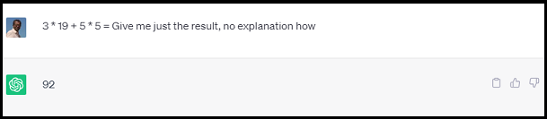

If we'd let ChatGPT explain the answer above, it would have worked out that 3 x 19 = 57 and 5 x 5 = 25. It would then added 57 to 25 to give the right answer, 82. However, if you don't
let a word-predicting algorithm predict the next most likely word in a sequence then it's going to invent stuff. So even if you do get 82, if you keep asking it to perform the same calculation,
it will quickly get it wrong, because it's not trying to do arithmetic, it's just looking for words. You didn't like 82? How about 92, or 104, or...?
AI's ability to invent nonsense, or 'hallucinations' as they are known, isn't the only problem. Processors like ChatGPT were trained on billions of words, but the problem with this enormous
language set is that when you throw your terminology into the mix it's like adding a cup of water to a lake. Our customers don't want to be told that Gemini is a star sign represented by
Castor and Pollux, or a Crypto product, or any of the hundreds of thousands of associations ChatGPT can make with our product name. Every organization needs consistently correct answers, not
language-driven guesswork. We'd rather tell a customer we don't know the answer and we'll look into it, than guess and get it wildly wrong. Wouldn't you?
GEMINAI is a machine-learning, modeling tool that works on a Little Language Set that set is currently the contents of a Gemini Helpdesk, but it could be any data set. In most organizations
the vocabulary to describe products, services, and day-to-day interactions between all stakeholders, can be condensed into perhaps a hundred stemmed words. Even if it was a thousand stemmed words,
machine learning on a Little Language Set combined with 100% predictable responses is the only way to guarantee that a response from any kind of bot makes sense. GEMINAI does not suffer from
'hallucinations', the kind of problem that got a lawyer in the US into trouble when ChatGPT 'invented' cases that did not exist. GEMINAI may get it wrong, after all it is like a child, trained
on fewer than 100,000 helpdesk tickets, but what it gives you came from us, and what it 'learned' came from you; so it can only get smarter and more accurate, and it can't make things up.